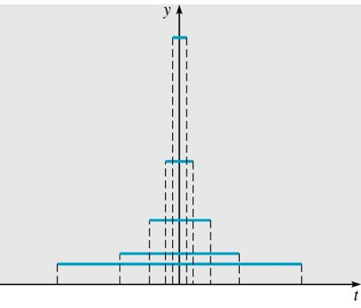
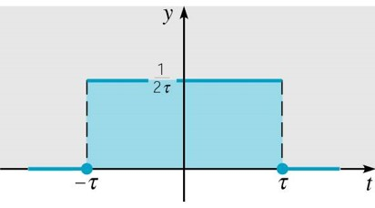

Section 6.6 Impulse functions
¶One of the most useful capabilities of the Laplace transform is to deal with forcing functions that aren't even functions, but that occur with great regularity in the modeling of physical systems. The guiding question here that we should keep in mind is “what happens to an oscillating mass when it gets struck by an outside blow?”.
We consider
where
Here \(g(t)\) is a force and
is the impulse of the force, or the amount of force in a short time period about \(t_{0}\text{.}\)
If \(y=\)current in an electric circuit, \(g(t)=\) is the time derivative of the voltage, then \(I(\tau)\) is the total voltage impressed on circuit in the time interval \(I=\left(t_{0}-\tau,t_{0}+\tau\right)\text{.}\) We will use the following particular example of a force with \(\tau=0\) (to simplify things):
where \(\tau>0\) is small.
We'll first look at some nice properties of \(d_{\tau}(t)\text{:}\)
- \({\displaystyle \lim_{\tau\to0^{+}}d_{\tau}(t)=0}\text{,}\) whenever \(t\neq0\text{,}\) and \(\lim_{\tau\to0^{+}}d_{\tau}(0)=\infty\text{.}\) 
- \(I(\tau)=\int_{-\tau}^{\tau}\frac{1}{2\tau}dt=\left[\frac{1}{2\tau}t\right]_{-\tau}^{\tau}=1\) for every \(\tau\text{.}\) Hence \({\displaystyle \lim_{\tau\to0^{+}}}I(\tau)=1\text{,}\) 
We thus want to define a unit impulse function \(\delta\), with the properties
and
This object isn't actually a function, but there is a mathematically rigorous way to define objects called generalized functions which includes \(\delta\) which we call the Dirac delta function. We can think of \(\delta\) as a limit of the \(d_{\tau}(t)\) functions: